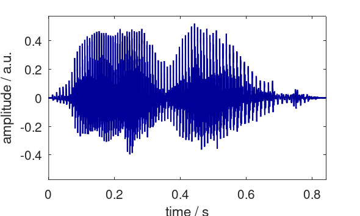
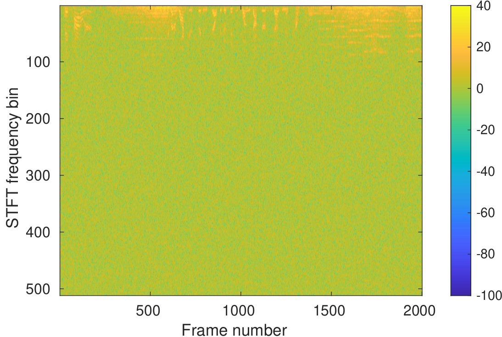
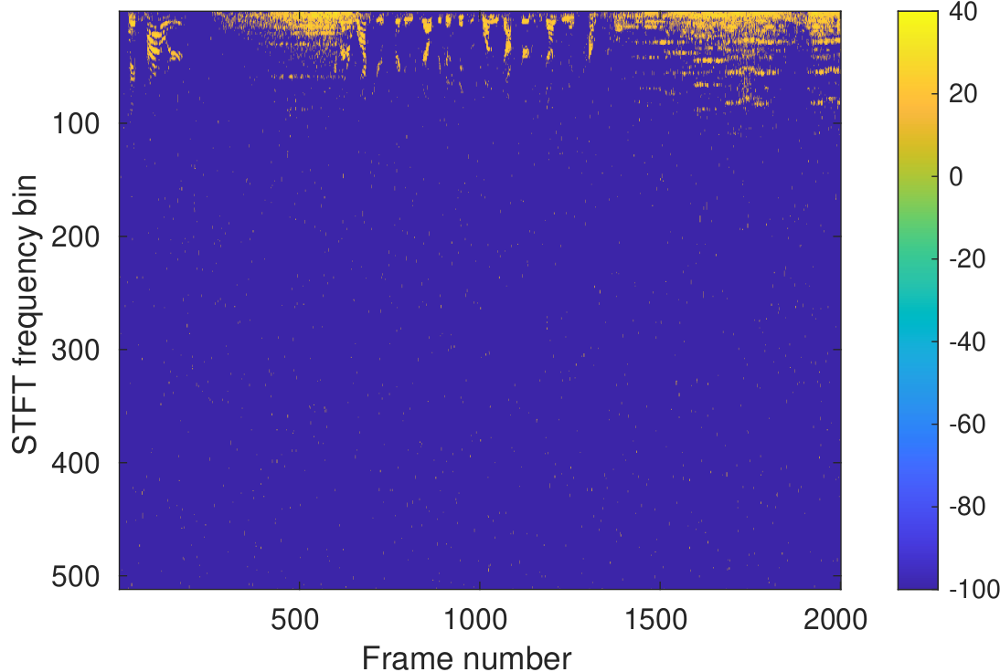
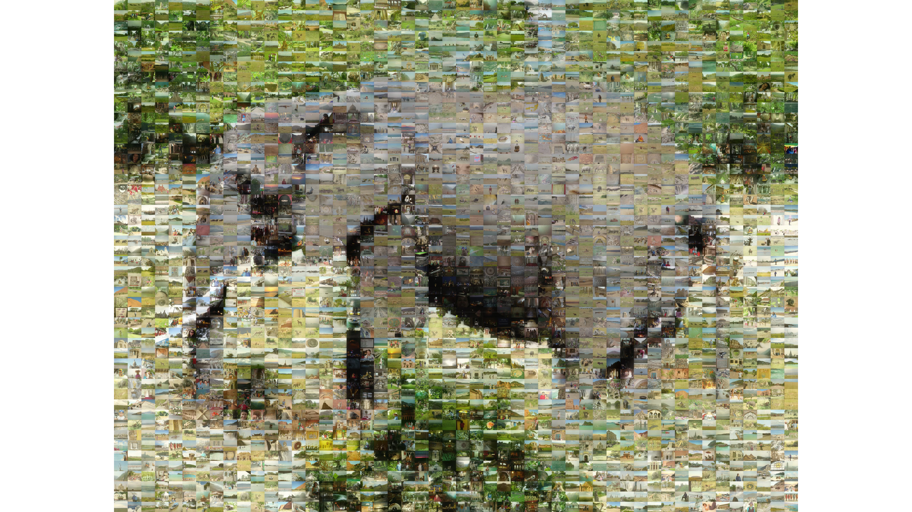
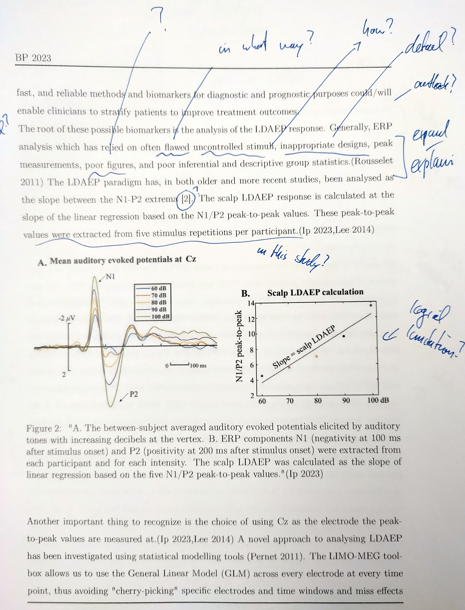

Examples of signals



Some mathematical tools for precise description
\[ X_L(\omega,m) = \sum_{n=-\infty}^\infty(x[n]w_L[n-mD]) e^{-j \omega n} = \mathcal{F}\{x[n]w_L[n-mD] \} \]In time, frequency, time-frequency, manipulated...
Five different study lines + international students (heterogeneity)
Growing student numbers (32 -> 143)
Little contact time per student (trust)
One size fits all is a dead end
Heterogeneous prerequisites lead to misconceptions


Provide modular material on-demand (tackles heterogeneity)
Clear structure and expectations / transparency (individual challenges)
Create support at various time scales (safe space)
Utilize misconceptions (individualization/ownership)
Create a small class within a large class (acknowledgement)
”Really really really like the short videos that you can go and see before the lecture, gives a solid overview and leaves time at the lecture to go into depth.”
”I was positively surprised... even my impostor syndrome gave up and I was not afraid to ask stupid questions.”
”This is the first large course where I genuinely felt seen as an individual student.”